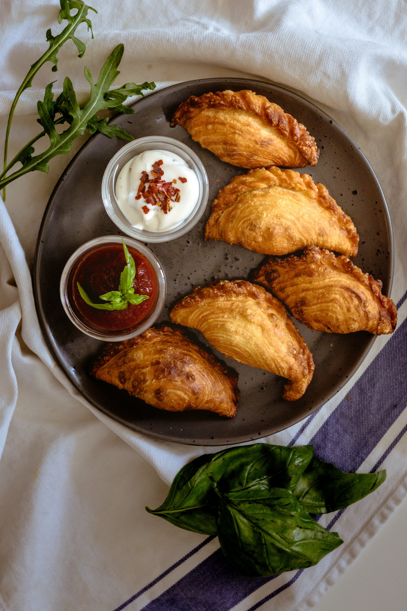

Malaysia Curry Puff
A Malaysian curry puff is a small, golden pastry filled with curried potatoes, chicken, or sometimes even sardines. The crust is flaky and slightly crispy, made from dough that's lovingly folded and crimped by hand. Inside, the curry filling is rich, aromatic, and slightly spicy, bursting with flavors of turmeric, cumin, and onions. You can find curry puffs everywhere here — from street stalls to fancy bakeries, and we love having them as a snack or even breakfast. It’s like holding a little piece of Malaysian flavor and tradition in your hand!
Curry Puff Recipe
Ingredients:
- Chicken
- Potato
- Onions and shallots
- Dried Red Chilli
- Curry leaves
- Curry powder
- Butter
- Flour
How to make?
- Soak dried chilies in hot water for 5 minutes. Rinse and blend together with shallots until smooth, then mix in the curry powder. Set the chili paste aside.
- Heat oil in a wok and sauté the chili paste and curry leaves until fragrant. Add the diced chicken and potatoes, and stir-fry over medium heat for 3 minutes. Add the onions, water, and simmer for 5 minutes or until the mixture is almost dry. Add salt and sugar to taste. Remove the filling from heat and let cool.
- Add salt to water to make a saltwater solution. Gradually add the saltwater to the flour, kneading slowly until a smooth, white dough forms. Divide the dough into portions of 85 g each and roll them into balls. Set aside.
- Add the butter and ghee to the flour and knead until a dough forms. Divide the dough into portions of 70 g each.
- Flatten the water dough and wrap the oil dough inside, pinching the edges to seal well. Let the dough rest for 10 minutes.
- Use a rolling pin to roll out the dough into a rectangle measuring 20 x 11 cm (8″ x 4″). Starting from the shorter end, roll it up tightly to form a roll. Then, flatten the rolled dough slightly by rolling from the shorter end again. Finally, roll it up once more from the shorter side to form another roll.
- Let the dough rest for 10 to 15 minutes. Repeat the process with the remaining dough. Then, cut each rolled dough into 4 pieces.
- Roll one piece of the cut dough into a circle using a rolling pin. Place 1 tablespoon of the filling in the center.
- Brush the edge with water and fold the dough in half. Press the edges together to seal, forming a half-moon shape. Pinch the edge of the puff with your thumb, folding the back side forward and sealing it with the front. Repeat this process to create about 8-9 pleats.
- Heat oil in a wok or deep fryer until hot, ensuring there’s enough oil to fully submerge the curry puffs. Deep fry over medium heat until golden brown. Remove from the oil using a strainer and let cool on a cooling rack. Serve warm.
Click below for tutorial video
How to make Malaysian curry puff